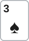

안녕하세요. 대회 초반, 다들 스택이 100BB 정도로 깊은 레벨이에요. 버튼에서 오픈하면 블라인드의 3벳을 맞는 일이 생기죠.
오늘 Hero는 버튼에서 K♥Q♥로 오픈했다가 SB의 3벳에 콜하고, 포지션을 가진 채 3벳 팟을 치러요. 3벳 팟은 팟이 커서 결정 하나하나가 무거워요. 그 무거운 팟에서 포지션이 있는 쪽이 무엇을 고를 수 있는지가 오늘의 주제예요.
이 글에서 배울 것
- 3벳 팟의 낮은 SPR에서 탑페어로 콜할지 레이즈할지를, "레이즈하면 누가 남나"로 따지는 법
- 3벳한 상대가 턴에 체크한 뜻을 체크 레인지 콤보로 세어 읽는 법
- 포지션이 있는 쪽이 낮은 SPR에서도 팟을 얼마나 키울지 스스로 정한다는 것
오늘의 한 판
Hero (BTN · 스택 100BB) · 상대 (SB · 스택 100BB) · 블라인드 0.5/1, BB 앤티 1BB

프리플랍
Hero(BTN) 2.2BB 오픈 → SB 9BB로 3벳 → BB 폴드 → Hero 6.8BB를 더 내고 콜. 팟은 SB 9 + Hero 9 + BB 1 + 앤티 1 = 20BB예요.
플랍 · 팟 20BB



SB 6BB c-bet → Hero는 콜할까, 18BB로 레이즈할까? Hero는 콜했어요. 팟 32BB
Hero는 탑페어, 키커 K예요. Q♦ 7♣ 3♠는 무늬가 다 다르고 숫자도 떨어져 있어서 드로우가 거의 없는 드라이 보드예요.
턴 · 팟 32BB


SB 체크 → Hero는 벳할까, 체크할까? Hero는 10BB 벳을 골랐고 SB가 콜했어요. 팟 52BB
리버 · 팟 52BB


SB 체크 → Hero는 15BB를 벳할까, 체크할까?
결론부터 말할게요. 프리플랍은 아슬아슬한 콜, 플랍은 레이즈가 아니라 콜, 턴과 리버는 작은 벳이에요. 이 판의 핵심은 플랍이에요. 레이즈하면 Hero가 이기고 있는 핸드는 다 접고, 지고 있는 핸드만 남아요. 콜로 그 약한 핸드들을 판에 남겨 두면, SB가 턴에 체크로 넘겼을 때 Hero가 크기를 골라 돈을 받을 수 있어요.
남은 베팅이 있어 실제 결과는 달라질 수 있어요. 프리플랍·플랍은 에퀴티 비교로, 턴은 벳과 체크 비교로 판정하고, BB 금액은 계산용이에요.
오늘의 가정
- SB 3벳 레인지: AA·KK·QQ·JJ·TT, AK, AQs·AJs·KQs, 블러프로 A5s·A4s(솔버 결과 아님). Hero 카드를 빼면 54콤보예요
- 플랍: SB는 6BB를 레인지 전체로 걸어요. Hero가 레이즈하면 AA·KK·QQ·AQs만 계속하고 나머지는 접는다고 가정해요
- 턴: SB는 AA와 셋 QQ로는 계속 걸고, 나머지로 체크해요. 체크한 뒤에는 콜 아니면 폴드(체크레이즈 없음)
- KQs: Hero와 똑같은 핸드라 이 보드에서는 쇼다운하면 늘 팟을 나눠요. Hero가 이기는 쪽도 지는 쪽도 아니라서, 플랍 레이즈 비교부터는 계산에서 빼고 셌어요. 플랍 콜 기준(50콤보 전체)에만 들어가고, 레이즈 표의 48콤보와 턴 체크 레인지 41콤보는 KQs 2콤보를 뺀 수예요
- 콜을 받은 뒤 다음 스트리트는 체크로 쇼다운한다고 단순화해요(R01과 같아요)
1단계. 프리플랍: 겨우 넘는 기준과 포지션
Hero가 더 내야 하는 돈은 6.8BB, 콜하면 팟은 20BB예요.
필요 에퀴티 = 6.8 ÷ 20 = 34%
가정한 3벳 레인지 상대로 K♥Q♥의 에퀴티는 약 34.9%예요(몬테카를로). 기준을 겨우 넘어요.
여기서 조심할 게 있어요. 34.9%는 다섯 장을 끝까지 공짜로 다 봤을 때 Hero 몫이에요. 실제로는 중간에 벳이 오가서, 이 몫을 다 챙기지 못하고 접는 판도 생길 수 있어요. 겨우 넘는 에퀴티를 실제 돈으로 바꾸려면 포지션이 필요해요. 아웃 오브 포지션이었다면 같은 34.9%로도 모자랐을 수 있어요.
콜하는 순간 정해지는 것: SPR
콜하고 나면 두 사람 다 남은 스택이 91BB예요. 팟 20BB로 나누면 이래요(A16).
SPR = 91 ÷ 20 = 약 4.55
팟벳이면 3번, 하프팟벳이면 4번에 스택이 다 들어가요. R01의 단일 레이즈 팟이 SPR 약 17.7이었던 것과 비교하면 4분의 1쯤이에요.
이게 무슨 뜻이냐면
이 팟은 누군가 한 번만 크게 키우면 바로 스택 결정이 오는 팟이에요. A16에서 본 것처럼 3벳 팟의 진짜 결정은 플랍과 턴에 몰려요. 그래서 오늘 판에서 가장 무거운 결정은 리버가 아니라 플랍의 콜 대 레이즈예요.
2단계. 플랍: 콜할까, 레이즈할까
콜 기준은 쉽게 넘어요
SB가 팟 20BB에 6BB, 팟의 30%를 걸었어요. A28에서 본 3벳 팟의 작은 c-bet이에요. 오늘은 SB가 이 크기를 레인지 전체로 걸었다고 가정해서, 강한 핸드도 약한 핸드도 다 이 벳 안에 섞여 있어요.
필요 에퀴티 = 6 ÷ 32 = 약 18.75%
SB의 플랍 레인지 50콤보 전체 상대로 Hero 에퀴티는 약 67.2%예요. 접을 이유는 없어요. 진짜 질문은 "콜이냐 레이즈냐"예요.
레이즈하면 누가 남을까
Hero가 18BB로 레이즈하면 SB는 12BB를 더 내야 해요. SPR이 낮은 3벳 팟에서 이 레이즈를 받는다는 건 사실상 스택을 걸겠다는 뜻이라, SB는 강한 핸드로만 따라온다고 가정했어요. 여기서부터는 비기는 KQs 2콤보를 빼고 48콤보를 나눠요.
| 레이즈 18BB에 | 핸드 | 콤보 |
|---|---|---|
| 계속(Hero보다 강함) | AA 6, KK 3, QQ 1, AQs 2 | 12 |
| 폴드(Hero보다 약함) | JJ 6, TT 6, AK 12, AJs 4, A5s 4, A4s 4 | 36 |
계속 = 6 + 3 + 1 + 2 = 12콤보
빨리 세는 팁: 보드의 Q♦와 Hero의 Q♥가 빠져서 QQ는 한 조합(Q♠Q♣)만 남고, AQs는 스페이드·클럽 2콤보예요. Hero가 K♥를 쥐고 있어 KK는 3콤보, AK는 A 4장 × K 3장 = 12콤보예요.
이제 두 묶음을 상대로 Hero 에퀴티를 따로 보면 이래요.
| 상대 묶음 | Hero 에퀴티 |
|---|---|
| 레이즈에 계속하는 12콤보 | 약 13.33% |
| 레이즈에 접는 36콤보 | 약 86.2% |
이게 무슨 뜻이냐면
레이즈는 Hero가 약 86.2%로 이기고 있는 핸드를 전부 내보내고, 약 13.33%밖에 안 되는 핸드만 남겨요. R01 턴에서 던진 질문, "이 벳을 받아 주는 핸드보다 내가 앞서나?"에 대한 답이 크게 "아니요"예요.
레이즈가 돈을 버는 길이 아예 없는 건 아니에요. 48콤보 중 36콤보, 곧 SB가 75%를 접으니 지금 팟을 자주 가져와요. 그런데 그 팟은 어차피 Hero가 많이 이기고 있던 팟이에요. 레이즈는 그 팟을 지금 바로 가져오는 대신, JJ·TT 같은 핸드가 턴·리버에 더 낼 돈을 버리는 선택이에요.
SPR로 다시 보면
레이즈를 콜 받으면 팟은 56BB, 남은 스택은 73BB예요. SPR은 약 1.30으로 떨어져요. 이때 SB가 턴에 남은 73BB를 다 민다면, Hero가 콜하는 데 필요한 에퀴티는 이래요.
73 ÷ (56 + 73 + 73) = 약 36.14%
계속하는 쪽 상대 Hero 에퀴티는 약 13.33%라 콜할 수 없어요. 레이즈한 18BB를 놓고 접게 돼요.
반대로 콜하면 팟 32BB에 남은 스택 85BB, SPR 약 2.66이에요. 아직 팟벳 두 번이 남은 깊이라서, Hero는 턴에 SB가 어떻게 나오는지 보고 크기를 고를 여유가 있어요.
3단계. 턴: 3벳한 SB가 체크했다는 뜻
체크는 '약하다'가 아니라 '갈라졌다'
2♥는 A5s·A4s에 거트샷(A5s는 4, A4s는 5가 오면 스트레이트)을 준 것 말고는 크게 바꾼 게 없어요. 그런데 SB가 이번엔 체크했어요.
3벳 레인지는 처음부터 강한 핸드가 많아서, 3벳한 쪽의 체크를 "약하니까 포기했다"로만 읽으면 안 돼요. 체크는 SB의 레인지가 계속 걸 핸드와 멈출 핸드로 갈라졌다는 신호예요. A28에서 작은 c-bet은 턴 카드를 보고 정하고 싶은 핸드에게 여지를 남긴다고 했죠. JJ·TT처럼 Q 아래 포켓페어가 바로 그 핸드예요.
체크 레인지를 세어 보기
플랍 레인지 50콤보에서 시작해요. AA와 셋 QQ는 계속 걸었다고 보고 7콤보를 빼요. KQs 2콤보는 비기는 핸드라 따로 둬요. 남은 41콤보가 체크 레인지예요.
| SB 체크 레인지 | 핸드 | Hero 벳(10BB)에 |
|---|---|---|
| Hero보다 강함 | AQs(탑페어 키커 A), KK(오버페어) | 콜 |
| Hero보다 약함 | JJ·TT(Q 아래 포켓페어), A5s·A4s(거트샷) | 콜 |
| Hero보다 약함 | AK·AJs(A 하이) | 폴드 |
콜하는 쪽은 AQs 2 + KK 3 + JJ 6 + TT 6 + A5s 4 + A4s 4 = 25콤보, 접는 쪽은 AK 12 + AJs 4 = 16콤보예요.
체크 레인지 = 25 + 16 = 41콤보
이게 무슨 뜻이냐면
41콤보 중 Hero보다 강한 건 5콤보뿐이에요. 나머지는 Hero에게 지면서 콜해 줄 핸드(JJ·TT·A5s·A4s) 아니면 접을 핸드예요. 3벳한 쪽이 체크했을 때 레인지가 위가 꽤 막혔다는 걸 이렇게 숫자로 볼 수 있어요. 다만 AQs·KK가 섞여 있으니 완전히 막힌 건 아니에요.
벳이 체크보다 나은가 (R01 3단계와 같은 방법)
계산 방법은 R01 턴과 같아서 짧게 볼게요. 콜하는 25콤보 상대 Hero 에퀴티는 약 73.8%, 콜 받은 팟 52BB에서 Hero 몫은 약 38.39BB, 이번에 낸 10BB를 빼면 약 28.39BB예요. 체크해서 쇼다운까지 가면 Hero 몫은 약 26.04BB예요(체크 레인지 전체 상대 에퀴티 약 81.4%).
콜 받을 때 약 28.39BB > 체크 몫 약 26.04BB → 벳
콜만 받아도 체크보다 낫고, AK·AJs가 접어 주면 덤이에요. 여기서 기억할 건 계산보다 콜해 주는 20콤보가 어디서 왔나예요. JJ 6 + TT 6 + A5s 4 + A4s 4 = 20, 이 핸드들은 플랍에 레이즈했다면 다 접었을 핸드예요. 플랍 콜이 턴 벳을 만든 거예요.
4단계. 리버: 같은 방법으로 짧게
9♠는 플러시도 스트레이트도 완성하지 않았고, A5s·A4s의 거트샷은 빗나갔어요. SB가 또 체크했어요. Hero가 15BB(팟의 3분의 1이 안 되게)를 걸면 SB 필요 에퀴티는 약 18.3%예요.
| 구분 | 핸드 | 콤보 |
|---|---|---|
| 더 좋은 핸드(콜) | AQs, KK | 5 |
| 더 나쁜 핸드(콜) | JJ, TT | 12 |
| 더 나쁜 핸드(폴드) | A5s, A4s | 8 |
R01 리버와 E22에서 쓴 씬밸류 계산이에요. 벳하면 더 나쁜 콜에게서 15BB씩 더 받고, 더 좋은 콜에게 15BB씩 더 내요.
(12 − 5) ÷ 25 × 15 = 약 4.2BB
체크보다 약 4.2BB 더 벌어요. 콜을 받았을 때 이기는 비율은 약 70.6%예요. 크기를 작게 잡은 이유는 R03 리버와 같아요. JJ·TT가 따라올 수 있는 크기라야 이 계산이 성립해요.
결과로 본 SPR
이 판에서 Hero가 넣은 돈은 프리플랍 9BB, 플랍 6BB, 턴 10BB, 리버 15BB예요. 스택의 절반도 안 들어갔어요. SPR 약 4.55는 "다 들어갈 수 있는 팟"이지 "다 넣어야 하는 팟"이 아니에요. 원페어로 얼마나 키울지는 포지션이 있는 Hero가 정했어요.
왜 그럴까: 인 포지션은 '팟 크기를 고르는 권리'예요
탑페어는 3벳 레인지의 한가운데에 있어요
K♥Q♥ 탑페어는 SB 레인지의 위쪽(AA·KK·QQ·AQs)에는 지고, 아래쪽(JJ·TT·A 하이)에는 이겨요. 이런 핸드로 팟을 한 번에 크게 만들면 아래쪽은 빠지고 위쪽만 남아요. 작은 벳을 여러 번 나눠 걸면 아래쪽이 한 번씩 따라와 줘요.
그래서 이 핸드의 일은 "크게 이기기"가 아니라 "아래쪽에서 조금씩 받기"예요. 플랍 레이즈가 나빴던 이유도, 턴·리버 작은 벳이 좋았던 이유도 여기서 나와요.
그 선택을 할 수 있는 게 포지션이에요
SB가 먼저 행동하니 Hero는 매 스트리트 SB의 선택을 보고 나서 정해요. 턴 체크를 보고서야 "약한데 콜하는 20콤보가 남았다"를 알 수 있었어요. 아웃 오브 포지션이었다면 Hero가 먼저 벳할지 정해야 해서, SB 레인지가 갈라지는 걸 보지 못한 채 결정했을 거예요.
낮은 SPR일수록 이 권리가 비싸요
SPR이 높은 팟에서는 실수 하나를 다음 스트리트에서 만회할 여유가 있어요. SPR 약 4.55에서는 한 번 크게 키우면 되돌릴 길이 없어요. 그래서 3벳 팟에서는 "키울 수 있다"보다 "안 키울 수 있다"가 더 값진 선택이 되기도 해요.
자주 하는 실수
실수 1. "SPR이 낮으니 탑페어로 플랍에 레이즈해서 빨리 넣는다" "어차피 다 들어갈 팟이니 먼저 넣자"는 생각이에요. 하지만 오늘 레이즈를 받아 주는 12콤보 상대 Hero 에퀴티는 약 13.33%예요. 레이즈 뒤 SPR이 약 1.30이라 턴에 올인을 맞으면 접어야 하고요. 대신 레이즈 전에 "이 레이즈에 누가 남나"부터 떠올려요.
실수 2. 3벳한 사람의 체크를 한쪽으로만 읽음 "3벳한 사람이 체크했으니 덫이다" 또는 "포기했다" 둘 다 반쪽이에요. 오늘 체크 레인지 41콤보는 강함 5, 약한데 콜 20, 폴드 16으로 갈라져 있었어요. 대신 계속 걸었을 핸드를 빼고 남은 콤보를 세어요.
실수 3. 플랍 콜을 '소극적'이라고 생각함 콜은 겁먹은 선택이 아니에요. 오늘 턴 10BB, 리버 15BB를 낸 JJ·TT는 플랍 레이즈였다면 그 자리에서 접었을 핸드예요. 대신 콜을 약한 핸드를 판에 붙잡아 두는 선택으로 보세요.
"SB가 턴에 다시 걸었다면요?"
그러면 Hero는 체크 레인지가 아니라 계속 건 레인지를 상대해요. 오늘 가정에서는 AA와 셋 QQ처럼 Hero를 이기는 핸드가 그쪽에 모여 있으니, Hero는 "벳할까"가 아니라 "받을까"를 묻게 돼요. R02 턴처럼 그 레인지를 이기는 핸드와 지는 핸드로 나눠 콜을 정하면 돼요. 같은 판이라도 상대 행동 하나에 Hero의 질문이 바뀌어요.
이 판이 달라지는 조건
- 보드에 드로우가 많았다면: 오늘 보드는 드로우가 거의 없어서 콜로 넘겨도 다음 카드가 무섭지 않았어요. 플러시·스트레이트 드로우가 많은 보드라면 턴 카드 한 장에 Hero가 뒤집힐 수 있어서, 같은 계산을 다시 해야 해요
- 아웃 오브 포지션이었다면: 턴에 SB의 체크라는 정보가 없어요. Hero가 먼저 정해야 하니 오늘처럼 상대를 보고 크기를 고르기 어려워요
- 스택이 더 깊었다면: R03처럼 SPR이 커지면 레이즈 한 번이 곧 스택 결정이 되지는 않아요. 오늘의 콜 대 레이즈 비교는 SPR 약 4.55라서 나온 결론이에요
선생님의 한마디
- 플랍: 레이즈 버튼 위에서 손을 멈추고 "내가 이기는 핸드 둘, 지는 핸드 둘"을 입으로 말해 본 뒤, 레이즈에 어느 쪽이 남는지 보고 버튼을 골라요
- 턴: 상대가 넘기면 칩부터 집지 말고 "약한데 따라올 핸드가 몇 개냐"를 먼저 세요
- 리버: 크기는 JJ·TT 같은 페어가 "이 정도면 확인해 보자" 할 금액에서 출발해요
연습 문제
학습툴 에퀴티 계산기는 핸드 대 핸드로만 확인할 수 있어요. 콤보 수는 본문 표를 바탕으로 직접 세어요.
문제 1. 같은 플랍, 같은 6BB c-bet이에요. 그런데 이 SB는 3벳 팟에서 "이미 많이 넣었다"며 잘 접지 않는 사람이에요. Hero가 18BB로 레이즈하면 AA·KK·QQ·AQs에 더해 JJ·TT·AK까지 따라오고, AJs·A5s·A4s만 접어요. 콜? 레이즈?
정답 보기
KQs 2콤보는 본문처럼 빼고 세면, 레이즈를 받는 쪽은 48콤보 중 36콤보, 접는 쪽은 12콤보예요. 본문 2단계와 같은 기준으로 레이즈를 받는 쪽 상대 Hero 에퀴티를 봐요.
레이즈를 받는 36콤보 상대 Hero 에퀴티 약 63.14% → 절반을 넘음 → 레이즈 뒤 스택이 다 들어가도 Hero가 앞서는 쪽 → 레이즈
본문에서는 이 값이 약 13.33%라 레이즈가 지고 있는 쪽만 남겼어요. 같은 탑페어라도 결론을 바꾼 건 레이즈를 받아 주는 핸드의 구성이에요.
문제 2. 이번엔 턴이에요. 이 SB는 턴에 AQs·KK로 함정 체크를 하고, TT·A 하이·A5s·A4s는 전부 계속 걸어요. 체크 레인지가 AQs·KK(10BB 벳에 콜)와 JJ(폴드)뿐이라면 벳? 체크?
정답 보기
체크 레인지는 11콤보, 그중 JJ 6콤보가 접어서 폴드율은 약 54.55%예요. 콜하는 쪽은 AQs·KK뿐이라 콜을 받으면 Hero 에퀴티가 약 5.45%예요.
이번엔 콜만 받아서는 체크를 못 이기니, R01 2단계(플랍)에서 쓴 방법으로 벳의 몫을 두 갈래로 나눠 더하고 체크 몫과 비교해요. 본문 3단계에서는 콜 받을 때만 봐도 충분해서 이 합산을 쓰지 않았어요.
- 접을 때 몫: JJ가 접으면 지금 팟 32BB를 바로 가져와요. 11번 중 6번이니 6 ÷ 11 × 32 = 약 17.45BB
- 콜 받을 때 몫: 콜 받으면 팟 52BB 중 Hero 몫이 약 2.84BB인데 이번에 10BB를 냈으니, 한 번 콜 받을 때마다 2.84 − 10 = 약 −7.16BB예요. 이 일이 11번 중 5번(약 45.45%) 일어나서 콜 받을 때 몫은 약 −3.26BB예요
- 벳의 몫: 17.45(접을 때 몫) + (−3.26)(콜 받을 때 몫) = 약 14.2BB
체크 몫은 따로 구해요. 체크하면 리버까지 체크로 간다고 보고, 체크 레인지 11콤보 전체 상대 Hero 에퀴티(약 54.55%)만큼 지금 팟 32BB를 가져가요. 그래서 약 17.45BB예요. 접을 때 몫과 숫자가 우연히 같을 뿐, 하나는 폴드율에서, 하나는 에퀴티에서 나온 값이에요.
벳의 몫 약 14.2BB < 체크 몫 약 17.45BB → 체크
체크 레인지에 약한데 콜해 주는 핸드가 없으면, 같은 탑페어라도 벳은 이기는 핸드를 접게 하고 지는 핸드에게 돈을 넣는 수가 돼요.
핵심 정리
- 3벳 팟은 SPR이 낮아서 플랍 레이즈 한 번이 곧 스택 결정이에요. 레이즈의 값은 그 레이즈를 받아 주는 핸드의 구성이 정해요
- 탑페어는 3벳 레인지의 한가운데라, 팟을 크게 만들면 위쪽만 남고 작게 여러 번 걸면 아래쪽에서 받아요
- 3벳한 쪽의 턴 체크는 약함 선언이 아니라 레인지가 갈라진 신호예요. 위쪽이 얼마나 빠졌는지 콤보로 확인해요
- 포지션은 상대 행동을 보고 팟을 키울지 말지 고르는 권리예요. 낮은 SPR에서 이 권리가 더 비싸요
정리하며
오늘은 대회 초반 버튼에서 SB의 3벳에 콜하고, 포지션을 가진 채 3벳 팟을 끝까지 따라갔어요. 프리플랍은 34% 기준을 겨우 넘었고, 플랍에서는 레이즈가 이기고 있는 핸드만 내보낸다는 걸 확인하고 콜했어요. 턴에는 SB의 체크 레인지를 세어 약한 콜이 충분하다는 걸 보고 벳했고, 리버도 같은 핸드들에게 작게 한 번 더 받았어요.
다음 글 R07에서는 초반 수딧 커넥터 콜, 리버 스트레이트 밸류 사이즈를 다뤄요. 오늘은 원페어로 팟을 키우지 않는 쪽을 골랐다면, 다음은 드로우가 완성된 강한 핸드로 크기를 고르는 판이에요.
AI 작성 · 숫자는 계산 검증 · 가정 레인지 기준(솔버 결과 아님) · 토너 BB 앤티 1BB · 남은 베팅이 있어 BB 금액은 계산용, 리버 숫자는 상대가 레이즈하지 않는다는 가정